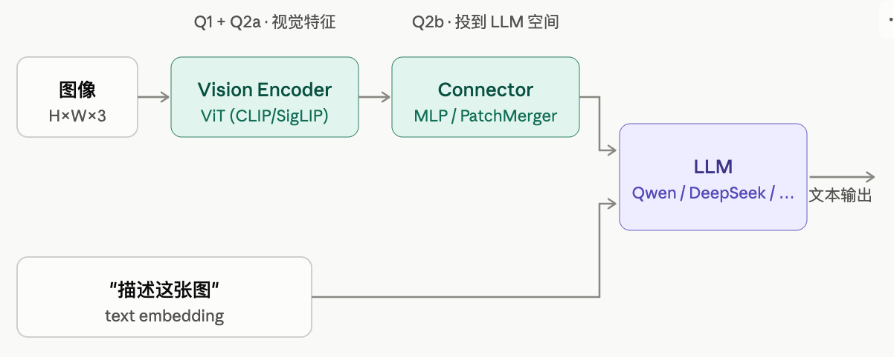
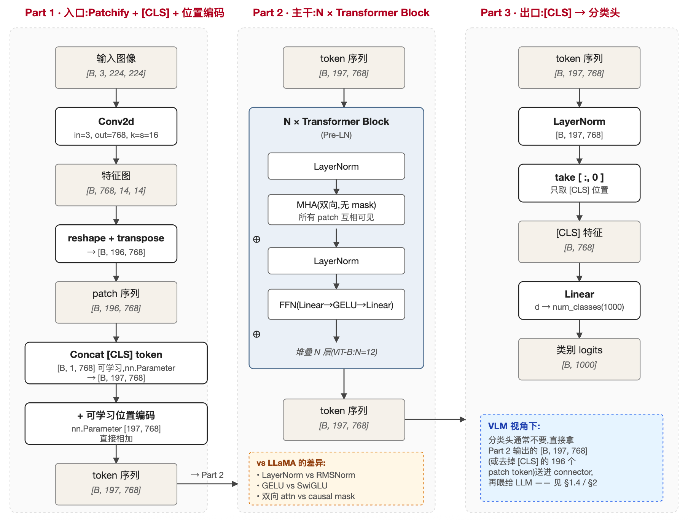
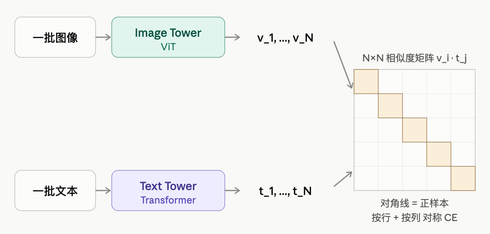
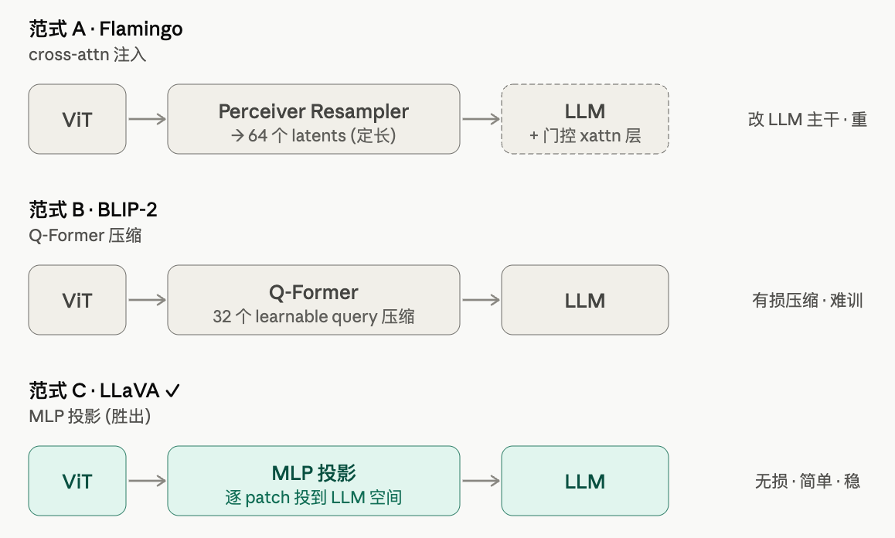
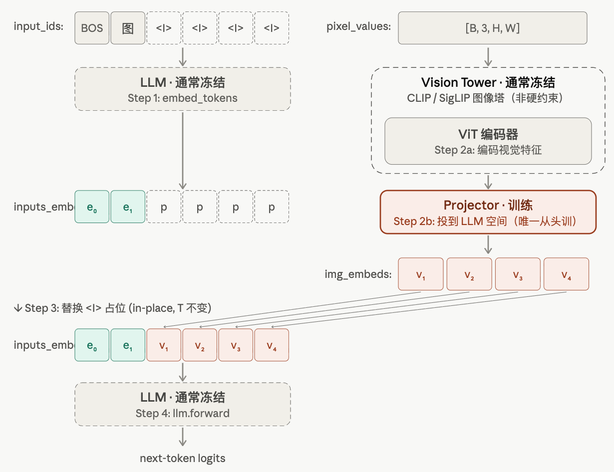
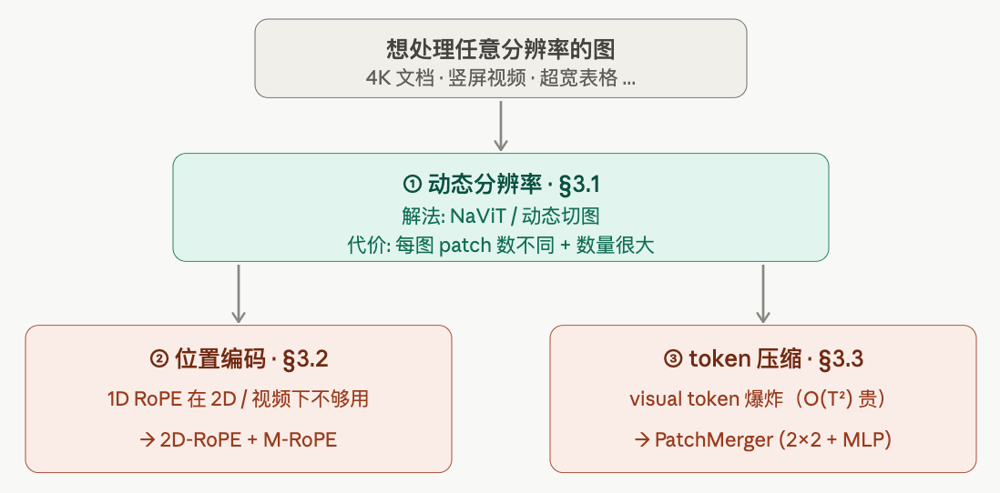
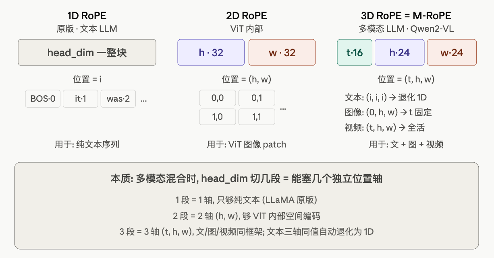
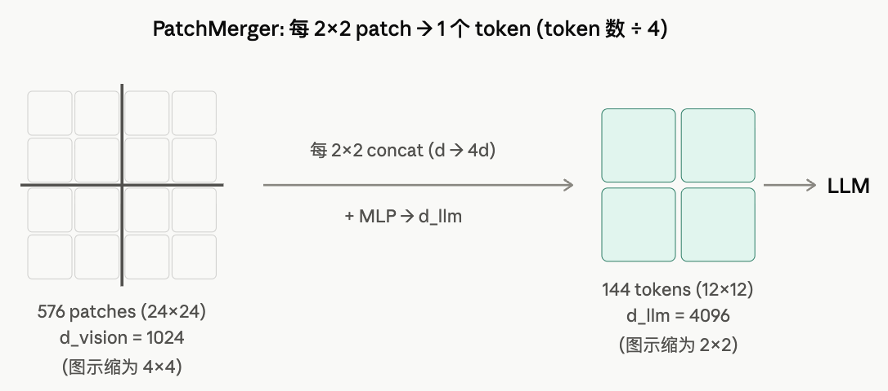
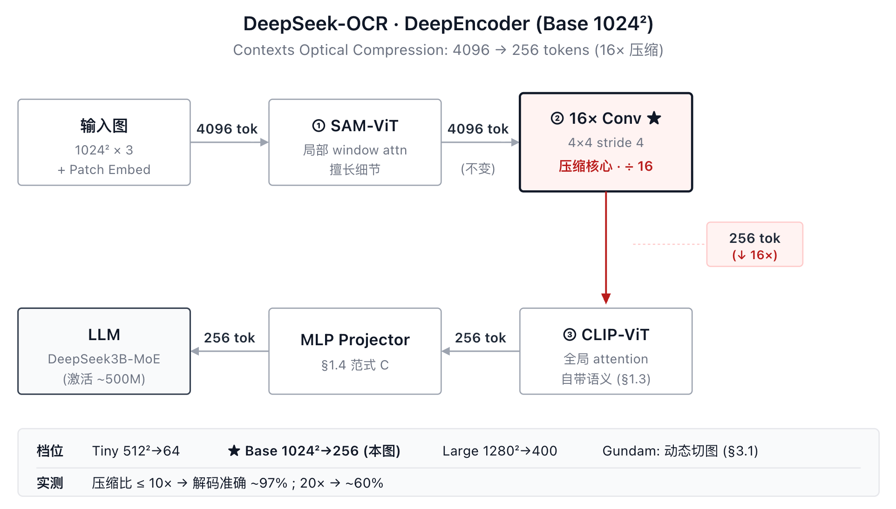

03-VLM: 从 ViT/CLIP 到 Qwen2-VL / DeepSeek-OCR
TL; DR：相比 LLM 需要理解的（ViT + CLIP/SigLIP + Connector）→ 手写 mini VLM（LLaVA 式 = 冻 vision / LLM + 训 Connector）→ 三个工程问题（动态分辨率 / 位置编码 / token 压缩）→ Qwen-VL 线（Qwen2-VL = mini VLM + 三个工程解）+ DeepSeek 线（ DeepSeek-OCR "光学压缩"）
- [Quick Ref for 手写 code]：MiniVLM + Qwen2-VL + DeepSeek-OCR ｜ ipynb ｜ colab
- doc 每节后有简化版手写代码（§2.1 MiniVLM / §4.2 Qwen2-VL / §5.2 DeepSeek-OCR）
- Qwen2-VL 部分与 HF 真模型逐元素对齐
- [面试点]：看懂 MiniVLM 部分应该就够了 - Vision 和 LLM部分是相对冻结的，设计的核心是 Connector
前言
读完 01_01_Transformer.md 知道：LLM 只认 embedding 向量序列，不在乎这个向量从哪来。VLM 就是抓住这一点——LLM 本体不动，前面叠一段 pipeline 把"图"转化成能输入 LLM 的 token。本篇大部分内容讲这段 pipeline 怎么搭。
本篇顺序（从概念到 real-world 简化版，同 01_02_MoE.md 思路）：
- §1 什么是 VLM：从 LLM 视角拆出新增设计（Vision Encoder + Connector），对应概念（ViT / CLIP & SigLIP / LLaVA）
- §2 手写最小 VLM：LLaVA 式 forward 骨架——Vision 和 LLM冻结部分直接call，训 MLP Connector -> token 替换视觉占位
- §3 走向 real-world：固定分辨率不够用之后绕不开的三件事——动态分辨率 / 2D-RoPE & M-RoPE / token 压缩
- §4 Qwen-VL 系列：经典版 Qwen2-VL（= §2.1 + §3 三件事补齐）
- §5 DeepSeek 系列：经典版 DeepSeek-OCR（视觉 token 当文本压缩器，光学压缩）
嗯 Qwen系列还是具有简约设计美感，DeepSeek有点花活儿（和MoE风格一样呢！）
1. 什么是 VLM
1.1 相比LLM的三段式
从已熟悉 LLM 的角度看，VLM 只需要回答两个问题：
Q1：怎么把一张图变成一串 token？——VIT（patch 化 + 编码成向量序列）。
Q2：这串 token 怎么"接得上"LLM？——分两层：
- Q2a 语义对齐：feature要表意近似，猫的“图”能靠近"a photo of a cat"那段话 - Q2b 空间对齐：feature 的维度也得对得上 LLM 的 hidden_dim，不然拼不在一起
答完这两个问题，LLM 一侧完全不动。几乎所有理解侧 VLM 都是同一个三段式，三段刚好对应 Q1/Q2：

- Vision Encoder（答 Q1 + Q2a）：把图编码成一串 visual 特征，训练时一般全程冻结
- 架构上是 ViT（§1.2，conv patch 当 token，答 Q1）
- 但预训练目标必须用 CLIP/SigLIP（§1.3，答 Q2a），feature 才"懂语言"，才能和后面的 LLM 接得上
- Connector / Projector（答 Q2b）：
- ViT 出来的 feature 维度（如 1024）和 LLM 的 hidden_dim（如 4096）不一样，要一个 MLP 投过去
- 这是整套结构里唯一从头训的部件——也是 VLM 设计里改动最频繁的（§1.4）。
- LLM：直接拿现成的文本基座（Vicuna / LLaMA / Qwen / DeepSeek），结构上几乎不动。训练初期冻结、后期 SFT 时才解冻调
三段里 LLM 拿来即用，Vision Encoder 是从视觉领域借的（且训练时冻着），真正从头训的只有 Connector——所以 LLaVA 范式只用 ~1M 量级数据就能训好（详 §2.2 训练阶段 + §1.4 LLaVA 范式胜出原因）。VLM 设计空间也就集中在 Connector 和"怎么喂图"上（§3 工程问题）。
1.2 ViT: 图变 token
ViT (Vision Transformer) = 把图先切块当 token、再走一遍纯 Transformer 主干。拆成三步（以 ViT-B/16 处理 224×224×3 为例）：
- 入口：Conv Patchify +
[CLS]+ 位置编码- Conv Patchify：图过一次 无重叠的 Conv2d（
kernel = stride），每个输出位置就是一个 token——业界把它叫 patch（kernel 覆盖原图的一个小方块）。 [CLS]token：BERT 沿用过来的"分类位"——一个加在序列最前面的可学习向量，N 层 attention 之后它的 hidden 就是整张图的"摘要"（出口拿它过分类头）。- 位置编码：一个可学习的位置矩阵，逐元素加到序列上。和 LLaMA 的 RoPE（每层旋转 Q/K）不同，ViT 这里是进 Transformer 之前一次性加好，后面 N 层都不再管位置。
- Conv Patchify：图过一次 无重叠的 Conv2d（
- 主干：N 层 Transformer
- 出口：取
[CLS]过分类头——结构和 LLM 末尾的 LM head 完全一样（Linear(d, K)→ K 类 logits），区别只在 K：CV 叫"分类头"（K =num_classes），LLM 叫"LM head"（K =vocab_size）。本质都是"对一个离散集合做分类"。
先一图看整体形状流转。

图里数字按 ViT-B/16 走（hidden_dim 768、N = 12 层、分类头到 ImageNet 1000 类）。对照 LLM 的 LM head 是同一个 Linear(d, K)，K = vocab_size 通常 32k–150k（LLaMA-3 128k、Qwen 152k）。
一个事实约束：ViT 没有 CNN 的局部性归纳偏置（卷积自带平移不变性、局部连接），所以只有在超大规模数据上预训练才会显著超过 CNN（原文用 JFT-300M，3 亿张图）。
1.3 CLIP / SigLIP: 图文语义对齐
接 §1.2 末尾：ViT 必须大规模预训练，但 ImageNet 分类预训练对 VLM 不友好——学到的 feature 只为"分进 1000 类某一类"服务，和语言没有直接关系（向量空间里"狗"特征和"dog"这个词无关）。VLM 要的是：feature = 语言级语义，CLIP / SigLIP 就是这个语义对齐的两种解法。
[CLIP（OpenAI, 2021）：图文对比对齐]
核心 idea：放弃人工分类标签，用 4 亿对 (图, 描述文本) 配对来训——让"猫的图特征"和"a photo of a cat" 的文本特征靠近。
CLIP 结构 = 双塔 + 共享投影空间——两个 encoder 独立处理图和文，但都投到同一个 d 维空间，可以直接算余弦相似度：
- Image Tower：
[B, 3, H, W]图 → ViT（§1.2 那个）→[B, hidden_vit]→ Linear 投影到[B, d]→ L2 归一化。 - Text Tower：
[B, T]文本 token → Transformer 主干 → 取[EOS]位置的 hidden[B, hidden_txt]→ Linear 投影到[B, d]（同一个 d）→ L2 归一化。
[EOS]不是终止符吗？ 在 CLIP 的 text encoder 里它还兼"全句摘要位"——因为 text encoder 是 causal（看前不看后），只有最末尾的[EOS]看遍了全句。对偶于 BERT/ViT 的[CLS]放最前面（双向 attention 才能放最前）。L2 归一化 vs L1 归一化，为啥这里用 L2？
- L1 归一化：除以
Σ|v_i|（绝对值之和）→ 元素和 = 1。- L2 归一化：除以
√(Σv_i²)→ Euclidean 欧几里得 长度 = 1。例：2D 向量(3,4)，√(9+16) = 5，除以 5 →(0.6, 0.8)，平方和 = 1。- 为什么 CLIP 用 L2：余弦相似度公式
cos(v,t) = (v·t)/(‖v‖₂‖t‖₂)，分母是两个向量的 L2 范数（Euclidean 长度）。L2 归一化后分母 = 1，余弦退化成纯点积v·t——既简化计算，又把"方向"作为唯一信号（向量 magnitude 不再混淆训练）。L1 不匹配这个公式。

- 训练 loss（对称 InfoNCE，只训练时用）：
- 相似度矩阵
M = V @ T.T ∈ [N, N]（每格M[i,j] = v_i · t_j，L2 归一化后 = 余弦相似度）；GT = N×N 单位矩阵I（对角线 1，其它 0），训练目标 = 把 M 推成 I 的形状（要的只是相对排序——M[i,i]在同行同列里最大，不要求绝对值 = 1）。 - 必须整 batch 一起算：每张图
v_i要和 batch 里 N 个文本都算相似度，才有"正样本t_ivs N−1 个负样本"的对比信号；单对单算不出 loss。 - Loss = 对称 softmax + CE：按行算 N 次 CE（"图找文本"：等价于 v_i 在 N 个 t 里挑 t_i 的 N 类分类）+ 按列算 N 次 CE（"文本找图"），两边相加。
- 相似度矩阵
- 训完后 / VLM 用法：只用图像塔（文本塔丢掉），它输出的 feature 已"指向"语言空间——猫的图 feature 会自然靠近 "a photo of a cat" 那段话的文本 feature。
[SigLIP（Google, 2023）：同思路换 loss（softmax → sigmoid），工程化]
结构和 CLIP 完全一样（双塔 + 共享投影空间 + GT = 单位矩阵 I），只换"怎么对比 M 和 I"。改的动机是 CLIP loss 在工程上有两个痛点（CLIP 强依赖大 batch——论文 batch = 32k，负样本越多对比信号越强——把痛点放大）：
- softmax 是 batch 级归一化：第 i 行分母
Σ_j exp(M[i,j])要看遍整个 batch；分布式必须先 all-gather（每张卡把数据广播给所有卡，每卡拿到完整全局数据）才能算。 - N×N 相似度矩阵 → 显存
O(N²)：batch 一大就爆。
SigLIP 改法：softmax → sigmoid——把"N 路分类"变成 N² 个独立二分类。M 的每格 M[i,j] 单独问"配对吗？"：sigmoid 输出 σ(M[i,j])，和 GT[i,j] 算 Binary CE。每格独立 → 自然分块、不要 all-gather、显存线性。
SigLIP 输出的图像特征同样"自带语义"，可以直接替换 CLIP 当 vision encoder。2023 年起新一代 VLM 几乎都用 SigLIP 系（Qwen3-VL 用 SigLIP2-SO400M、DeepSeek-VL2 用 SigLIP-SO400M，直接调用 checkpoint）。
1.4 LLaVA: 图文空间对齐
§1.3 训出了 vision encoder（CLIP/SigLIP 图像塔），能输出"带语义"的视觉 feature。但这些 feature 在自己的 d_vision 空间里（如 1024），和 LLM 的 d_llm 词嵌入空间（如 4096）——维度对不上、分布也不一样，没法直接拼进 LLM 输入。还差一个变换把它送进 LLM 空间，让 LLM 当普通 token 读。这个变换就是 Connector / Projector。
历史上有三条路，按"对 LLM 改动从大到小"排：

[范式 A：Cross-Attention 注入] —— Flamingo（2022，已淘汰）
- 在冻结的 LLM 层之间插入新的 cross-attn 层（Q=文本 hidden，K/V=视觉特征），让文本"主动来读"视觉。
- 淘汰原因：对 LLM 做了侵入式修改——结构重、改造成本高。
[范式 B：Q-Former 抽取] —— BLIP-2（2023，已淘汰）
- 在 ViT 和 LLM 之间塞一个 Q-Former：用 32 个可学习 query + cross-attn 从 N 个 patch 里抽出定长 32 个视觉 token，再接进 LLM。
- 淘汰原因：query 数定死 → 有损压缩，细粒度任务（DocVQA、OCR）明显处于劣势；query 训练比 MLP 难调，对数据配比敏感。
[范式 C：MLP 投影] —— LLaVA（2023，胜出，主流方案）
最朴素：一个可训练 MLP 把每个 patch feature 独立投到 LLM 词嵌入空间。整套结构里只有这个 MLP 是从头训的——ViT 和 LLM 都用预训练好的现成模型。这是 LLaVA 范式数据高效的根本原因。
为什么胜出：
- 信息无损：patch token 数原封不动搬过去，细粒度任务（OCR、文档）不踩坑。
- 训练稳定 + 数据高效：MLP 是最简单的可训练变换，从头训的参数量极小。LLaVA 约 1M 量级图文对就训得很好，而 Q-Former 路线动辄 1B+（因为 Q-Former 自身那套 query + cross-attn 参数也得从头训）。
- 要压 token 数也不必上 Q-Former：简单的 2×2 合并 / average pooling 就能顶上（§3.3 的 PatchMerger 就是这个升级），避免 Q-Former 那套复杂结构。
到这里 三段式全齐：vision encoder（CLIP/SigLIP）+ connector（MLP）+ LLM（Vicuna/LLaMA/Qwen/...）= LLaVA 架构。下一节 §2 把它写成代码，就是个最小 VLM。
1.5 一条时间线
| 时间 | 工作 | 核心贡献 | 本篇位置 |
|---|---|---|---|
| 2020 | ViT | conv patch 当 token，纯 Transformer 做视觉 | §1.2 |
| 2021 | CLIP | 图文对比学习，feature 自带语言语义 | §1.3 |
| 2023 | SigLIP | sigmoid 替 softmax，工程化更省 | §1.3 |
| 2023.04 | LLaVA | MLP 投影 + 拼进文本序列（连接范式胜出） | §1.4 |
| 2024.09 | Qwen2-VL | 原生动态分辨率 + M-RoPE + PatchMerger（Qwen 线转折点 / §4 经典版） | §4 |
| 2024.12 | DeepSeek-VL2 | 单 SigLIP + DeepSeekMoE + 动态切图 | §5 |
| 2025 | Qwen3-VL | DeepStack + Interleaved-MRoPE + Qwen3-MoE | §4 |
| 2025.10 | DeepSeek-OCR | 光学压缩长上下文：视觉 token 当文本压缩器（§5 经典版） | §5 |
| 2026 | Qwen-3.5 | backbone 换 Qwen3-Next 混合线性注意力 | §4 末尾 |
下面 §2 写"最小核"（LLaVA 式），§3 三个工程问题，§4/§5 两条模型线展开。
2. 手写一个最小 VLM
目的：看清"三段式"拼起来到底是什么——其实就是 encode 图 → 投影 → 把视觉 token 拼进文本序列，剩下全交给原来的 LLM。这就是后面所有真实模型的公共最小核（类比 01_02_MoE.md 里的 BasicMoE）。
2.1 LLaVA 式 mini VLM
先说三段都用什么具体模块（以 LLaVA-1.5 为例）：
- Vision Tower (全程冻结)：直接call CLIP ViT-L/14-336，输入
[B, 3, 336, 336]，按 §1.2 的 patchify，patch=14 →(336/14)² = 24×24 = 576个 patch → 输出[B, 576, 1024]（576 个 patch token，每个 d_vision = 1024）。 - Projector (训练主体)：两层 MLP
Linear(1024, 4096) → GELU → Linear(4096, 4096)。把每个 patch token 的 1024 维投到 LLM 的 hidden_dim（4096）。唯一需要从头训的部件。 - LLM (冻结, SFT 时训练)：现成文本基座，hidden_dim = 4096，结构完全不改。LLaVA-1.5 原版用 Vicuna-7B（= LLaMA-2 + ShareGPT 对话数据微调出来的 chat 模型）。
拼起来就是 forward——关键 trick：在输入文本里放 N_patch 个连续 <image> 占位 token（LLaVA-1.5 = 576 个），先正常 embedding 查表得到 [T, d_llm] 序列；再把这 576 个占位位置的 embedding 替换成投影后的 576 个视觉 token。这样后面 LLM 完全按普通 causal LM 跑，根本不知道某些 token 是从图来的。

# 双塔: 都是预训练好的现成模型, 直接加载即可
from transformers import CLIPVisionModel, AutoModelForCausalLM
vision_tower = CLIPVisionModel.from_pretrained("openai/clip-vit-large-patch14-336")
llm = AutoModelForCausalLM.from_pretrained("lmsys/vicuna-7b-v1.5")
# 我们只需要手写下面的 Projector + forward 逻辑 (从头训的也只有这部分)
class MiniVLM(nn.Module):
def __init__(self, vision_tower, llm, d_vision, d_llm):
super().__init__()
self.vision_tower = vision_tower # ← 掉包: HuggingFace CLIP ViT, 训练全程冻结
self.projector = nn.Sequential( # ← 手写: 两层 MLP, 整套结构里唯一从头训的部件
nn.Linear(d_vision, d_llm), nn.GELU(), nn.Linear(d_llm, d_llm))
self.llm = llm # ← 掉包: HuggingFace LLM (Vicuna/LLaMA/Qwen)
def forward(self, input_ids, pixel_values, image_token_id):
# 1. 文本照常查 embedding (用 LLM 自带的 token embedding 表, 不动)
inputs_embeds = self.llm.embed_tokens(input_ids) # [B, T, d_llm] ← 掉包 API
# 2. 图像走 vision tower + projector → 得到 LLM 空间里的视觉 token
img_feats = self.vision_tower(pixel_values) # [B, N_patch, d_vision] ← 掉包
img_embeds = self.projector(img_feats) # [B, N_patch, d_llm] ← 手写
# 3. 把 <image> 占位 token 的 embedding 替换成视觉 token
# (前提: input_ids 里 <image> 占位的个数 == 视觉 token 总数 N_patch)
mask = (input_ids == image_token_id) # [B, T] bool
inputs_embeds[mask] = img_embeds.reshape(-1, img_embeds.size(-1))
# 4. 拼好的混合序列照常过 LLM, next-token 预测 (LLM 完全不知道里头混了视觉)
return self.llm(inputs_embeds=inputs_embeds) # ← 掉包 forward
两段独立串行，合并点在 LLM 输入 embedding 层——这带来两个好处：
- §3 后面所有改动（动态分辨率 / 2D-RoPE / PatchMerger）都只动
vision_tower和projector，forward 第 4 步 LLM 完全不动 - 工程上方便 Encoder/Prefill (E/P) 分离——E 节点跑 ViT 出视觉 token，P 节点做合并 + LLM prefill。
后面每个真实模型 = 这个最小核 + 一点增量。
2.2 训练范式：两阶段
forward 看不出训练怎么做，单独说一下。LLaVA 的经典做法是两阶段，核心是"先对齐、再调教"：
| 阶段 | 训什么 | 冻什么 | 数据 |
|---|---|---|---|
| ① 特征对齐 | 只训 projector | 冻 ViT + 冻 LLM | ~600K 图-文对（caption 式） |
| ② 指令微调 SFT | 训 projector + LLM | 始终冻 ViT | ~150K 指令跟随数据 |
- 阶段 ① 的唯一目的：让 projector 学会"把视觉特征翻译到 LLM 听得懂的空间"，所以只动 projector。
- 阶段 ② 才解锁 LLM，让它学会按指令用图里的信息回答。
这里要分清硬约束 vs 约定：
- ViT 全程冻结不是必须的，只是常见选择——SigLIP2 那篇实验过解冻 ViT 对质量影响很小，所以多数工作图省事就冻着。
- 真正接近硬约束的是阶段 ①"只训 projector"： ViT 和 LLM 都是预训练好的，唯一没对齐的就是中间那个 projector，先单独把它训出来最稳。
真实模型一般把这个拉成三到四阶段（encoder 对齐 → 大规模图文预训练 → 长序列 / 视频 → SFT/RL），但骨架还是这个"先对齐 connector、再逐步解冻"的思路。各家具体阶段在 §4/§5 各模型里提。
3. 走向 real-world：绕不开的问题
最小 VLM（§2）有个隐含前提：图像被 resize 成固定分辨率（LLaVA 的 336×336）。
但真实场景立刻打破：4K 文档、竖屏视频、超宽表格……固定分辨率要么压糊小字、要么强行拉成方形毁掉长宽比。真实 VLM 普遍要解决三个连环问题：

3.1 动态分辨率
固定分辨率的几个害处：
- 低分辨率丢细节（小字、图表线条压糊）
- 强行改长宽比导致形变（长文档被拉成正方形）
- 而且不同图信息密度差异大——同一个固定 token 数既浪费又不够
两条解法：
| 路线 | 怎么做 | 谁用 | 代价 |
|---|---|---|---|
| 原生分辨率(NaViT) | 保留原图分辨率和长宽比直接切 patch → 不同图得到不同 patch 数（变长序列） | Qwen2-VL 起 | ViT 原版绝对位置编码废了，必须换（→ §3.2）；多张图打包进同一序列要额外处理 |
| 动态切图(Dynamic Tiling) | 切成若干固定尺寸 tile + 1 张全局缩略图，各自编码再拼 | LLaVA-NeXT、InternVL、DeepSeek-VL2 | tile 边界处可能丢上下文；好处是复用现成的固定分辨率 ViT |
两条路殊途同归：token 数随图实际大小走，token 数 ∝ (H/patch) × (W/patch)。代价：token 可能很多——引出 §3.3。
3.2 位置编码：1D → 2D / M-RoPE
为什么必须重做：
- §3.1 动态分辨率后，ViT 原版的可学习绝对位置编码废了（尺寸一变维度对不上）。
- LLM 用的 1D RoPE 也表达不了图像 2D / 视频 3D 的结构。
RoPE 回顾（详 01_01_Transformer.md）：LLaMA 用的位置编码——把 token 在序列里的 1D 位置编进 Q/K 的旋转角度，位置
i对应一组旋转角，不同位置的 Q/K 内积自然带上相对位置信息。文本只需 1 个位置轴。
分两层做：
[ViT 内部] 2D-RoPE：head 维度切两半，一半按 patch x 坐标旋转、一半按 y 坐标旋转——有了 2D 相对位置，任意分辨率都能用（不像绝对位置编码换尺寸要插值）。
[LLM 侧] M-RoPE（Multimodal RoPE，Qwen2-VL 提出）—— 本质就是 3D RoPE：把 1D 序列位置扩成 (t, h, w) 三轴，head 维度切成 时间 t / 高 h / 宽 w 三段分别旋转 Q/K。文本 token 三轴相同 → 自动退化成 1D-RoPE；图像/视频用各自的 (t, h, w)

3.3 token 压缩：PatchMerger
§3.1 的副作用：一张高分辨率图能切出几千个 patch，全塞进 LLM 序列又长又贵（attention 是 O(T²)）。投影进 LLM 之前要先压一道。
主流做法：PatchMerger（= 2×2 合并 + MLP）
- 相邻 2×2 的 4 个视觉 token 在 hidden 维上拼起来（
d → 4d） - 再过 MLP 投到
d_llm - token 数直接降到 1/4

重要：PatchMerger 就是 §2 那个 projector——压缩和"投到 LLM 空间"合并成一步。InternVL 的 pixel unshuffle 是同一思路。
这三件事（动态分辨率 + 2D/M-RoPE + PatchMerger）是 2024 后所有真实 VLM 的标配。下面 §4/§5 看两条模型线怎么组装、又各自加了什么。
4. Qwen-VL 系列
Qwen 这条线从 2023 走到 2026 跨了五代，几乎踩过 §3 每一个工程问题。和 01_02_MoE.md §5 一样，挑一代当经典展开——选 Qwen2-VL：它是 §3 三件事第一次被一次性补齐的转折点，结构最有代表性，之后各代都是 "Qwen2-VL + X" 的增量（详 §4.1 表 + DeepStack callout）。
4.1 设计变化对比
先回忆每个组件有哪些主流选项（加粗 = 2024 后真实模型的主流）：
基础结构：
- 图变 token：全部 ViT（§1.2）
- 图文语义对齐：CLIP / SigLIP（§1.3）
- 图文空间对齐：范式 A cross-attn / 范式 B Q-Former / 范式 C MLP（主流形态是 PatchMerger = 2×2 合并 + MLP，§3.3）
工业级：
- Vision Encoder 分辨率：固定 / 动态分辨率 NaViT / 动态切图 Tiling（§3.1）
- Vision Encoder 位置编码：绝对位置编码 / 2D-RoPE（§3.2）
- LLM 位置编码：1D-RoPE / M-RoPE 三D（§3.2）/ Interleaved-MRoPE（= M-RoPE 频段交错版，§4.2）
- LLM 上下文长度：LLM 一次能处理的最大 token 数（视觉 + 文本一起算）。8K → 32K → 128K → 256K+
下面这张表看 Qwen 各代在每个组件上的具体选择：
| 模型 (时间) | Vision Encoder | Connector | LLM | 这代核心 idea |
|---|---|---|---|---|
| Qwen-VL (2023.08) | CLIP (冻结) + 固定分辨率 | cross-attn | Qwen-7B dense + 1D-RoPE + 8K | 第一代旧范式 |
| Qwen2-VL (2024.09) | CLIP-init (解冻继续训) + 2D-RoPE + 动态分辨率 | MLP PatchMerger | Qwen2 dense + M-RoPE + 32K | 本节经典版 + 转折点；§3 三件事一次性补齐 |
| Qwen2.5-VL (2025.01) | 沿用 + 加 Window Attn | PatchMerger | Qwen2.5 dense + M-RoPE + 绝对时间 + 128K | ViT 工程化 + 时间维绑 FPS |
| Qwen3-VL (2025) | 换 SigLIP2-init + 2D-RoPE + 动态分辨率 | PatchMerger + DeepStack (多层注入) | Qwen3 / Qwen3-MoE + Interleaved-MRoPE + 256K | 切到 SigLIP2 系 + DeepStack 注入 + 升级 Qwen3-MoE |
| Qwen-3.5 (2026, preview) | 沿用 | PatchMerger (去 DeepStack) | Qwen3-Next（混合线性）+ Interleaved-MRoPE | 视觉路简化；backbone 换混合线性；shared expert 回归 |
2D-RoPE vs M-RoPE 不冲突：分两层用——2D-RoPE 在 ViT 内部（patch x/y 坐标），M-RoPE / Interleaved-MRoPE 在 LLM 内部（混合序列里 (t, h, w) 三轴），各管各的。
DeepStack（Qwen3-VL 引入，Qwen-3.5 又去掉）：本质是类似 ResNet 式多层残差注入
4.2 经典版：Qwen2-VL
Qwen2-VL 是 §3 三件事第一次被一次性补齐的 VLM——之前 Qwen-VL v1 还停在旧范式，之后各代都是 "Qwen2-VL + X" 的增量。每段都是前面章节的"标准答案"：
| 组件 | Qwen2-VL 用的 | 对应章节 |
|---|---|---|
| Vision Encoder | CLIP-init 重训 ViT + 2D-RoPE + NaViT 动态分辨率 | §1.3 + §3.1 + §3.2 |
| Connector | PatchMerger（2×2 合并 + MLP，token 数 ÷4） | §1.4 范式 C + §3.3 |
| LLM 位置编码 | M-RoPE 三轴（mrope_section=[16, 24, 24] 连续切） |
§3.2 |
| LLM 主干 | Qwen2 dense + 32K 上下文 | — |
相对 §2.1 MiniVLM 的差异 = §3 三件事补齐：
- vision_tower 是 NaViT 动态分辨率（§3.1）：patch 数随图变，不再固定 576。
- MLP → PatchMerger（§3.3）：projector 升级成 2×2 合并 (token 压缩) + MLP，token 数 ÷4。
- LLM 用 M-RoPE 位置编码（§3.2）：
position_ids从 1D 序号变成(t, h, w)三轴元组，要根据image_grid_thw算。
# 掉包: vision_tower 是 Qwen 自己 CLIP-init 重训出来的 675M ViT，内部用 2D-RoPE + NaViT
# vision_tower = AutoModel.from_pretrained("Qwen/Qwen2-VL-7B-Instruct", subfolder="visual")
# llm = AutoModelForCausalLM.from_pretrained("Qwen/Qwen2-7B")
class Qwen2VL(nn.Module):
def __init__(self, vision_tower, llm, d_vision, d_llm):
super().__init__()
self.vision_tower = vision_tower # 同 §2.1，但内部 NaViT + 2D-RoPE
self.merger = PatchMerger(d_vision, d_llm) # ← §2.1 的两层 MLP 升级成 PatchMerger
self.llm = llm # 同 §2.1
def forward(self, input_ids, pixel_values, image_grid_thw, image_token_id):
# 1. NaViT 下 patch 数随图变（变长），不像 LLaVA 固定 576
img_feats = self.vision_tower(pixel_values) # [N_patch_total, d_vision]
img_embeds = self.merger(img_feats) # [N_patch_total/4, d_llm] ← ÷4
# 2-3. embedding 查表 + mask 替换占位 token —— 和 §2.1 一样
inputs_embeds = self.llm.embed_tokens(input_ids)
mask = (input_ids == image_token_id)
inputs_embeds[mask] = img_embeds.reshape(-1, img_embeds.size(-1))
# 4. LLM forward 时用 M-RoPE 三轴 position id（§2.1 是 1D 默认序号）
position_ids = build_mrope_positions(input_ids, image_grid_thw, image_token_id)
return self.llm(inputs_embeds=inputs_embeds, position_ids=position_ids)
# PatchMerger = §3.3 的"2×2 合并 + MLP"，替代 §2.1 的两层 MLP
class PatchMerger(nn.Module):
def __init__(self, d_vision, d_llm):
super().__init__()
self.mlp = nn.Sequential(
nn.Linear(d_vision * 4, d_llm), # 4 个相邻 patch concat → d_llm
nn.GELU(), nn.Linear(d_llm, d_llm))
def forward(self, x):
x = group_2x2(x) # [N, d_vision] → [N/4, 4*d_vision]
return self.mlp(x) # → [N/4, d_llm]
训练策略上还多一处差别：§2.1 冻 ViT 只训 MLP；Qwen2-VL 因为 ViT 内部结构改了（2D-RoPE 换 1D pos embed），必须解冻让 ViT 一起训。
5. DeepSeek 系列
DeepSeek 这条线和 Qwen 路线不同：Qwen 补通用 VLM 能力；DeepSeek 越往后越聚焦在一个问题上——视觉 token 能压到多狠。挑一代当经典展开——选 DeepSeek-OCR：它把"光学压缩长上下文"做成了完整方案（详 §5.1 表）。
不过感觉学习的意义上没有Qwen VL强。
5.1 设计变化对比
回忆每个组件的主流选项（维度框架同 §4.1）：
基础结构：
- 图变 token：全部 ViT（§1.2）
- 图文语义对齐：CLIP / SigLIP（§1.3）—— DeepSeek 线主走 SigLIP 系（DeepSeek-OCR 的 DeepEncoder 内含一段 CLIP-ViT）
- 图文空间对齐：范式 A / 范式 B / 范式 C MLP（§1.4）—— DeepSeek 线全部范式 C
工业级：
- Vision Encoder 分辨率：固定 / 动态分辨率 NaViT / 动态切图 Tiling（§3.1）—— DeepSeek 线从 VL2 起全走 tiling 路线（NaViT 是 Qwen 那条线的选择）
- Vision Encoder 位置编码：绝对位置编码 / 2D-RoPE（§3.2）—— 沿用各 encoder ，没专门改
- LLM 位置编码：1D-RoPE / M-RoPE / Interleaved-MRoPE（§3.2）—— 沿用 1D-RoPE（DeepSeek 线偏 OCR / 文档，不像 Qwen 还要做视频时序定位，多模态 RoPE 用不上）
- LLM 上下文长度：8K → 32K → 128K → 256K+（§4.1）—— DeepSeek 线靠"光学压缩"省视觉 token，对 LLM 原生上下文长度反而要求没那么激进
所以 DeepSeek 线真正在变的是三个维度：Vision Encoder 怎么编、token 怎么压 / 抽、LLM 主干（Dense → MoE）。下面表只列这三列：
| 模型 | 时间 | Vision Encoder | token 压缩 / 抽取 | LLM | 这一代的核心 idea |
|---|---|---|---|---|---|
| DeepSeek-VL | 2024.03 | SigLIP + SAM 双编码器 | 无 | Dense | 低分辨率语义 + 高分辨率细节；护语言能力 |
| DeepSeek-VL2 | 2024.12 | SigLIP ckpt | 2×2 pixel shuffle（每块 → 196 token） | DeepSeekMoE+MLA | 动态切图 + MoE backbone（通用 VLM） |
| DeepSeek-OCR | 2025.10 | DeepEncoder（SAM + CLIP） | 16× conv 下采样（夹在 SAM 和 CLIP 中间） | 3B-MoE | 本节经典版；把光学压缩立为一等目标 |
| DeepSeek-OCR 2 | 2025 | + LM Vision Encoder（Qwen2-0.5B 改） | + 因果 query（类 Q-Former + query 间 causal） | 3B-MoE | 因果 query 做语义重排，压缩更贴合 LLM 解码 |
表里出现的新名词速查：
- SAM（Segment Anything Model，Meta 2023）：原本是分割模型，这里只取它的 image encoder（不要分割头）。在 1024×1024 高分辨率上预训过，长于细粒度细节；DeepSeek-VL 用 SAM encoder 补 CLIP/SigLIP 在小字、纹理上的弱项。
- DeepEncoder：DeepSeek-OCR 自命名的复合 encoder = SAM-ViT（局部 attn，提细节）→ 16× conv 下采样（核心压缩点）→ CLIP-ViT（全局 attn，补语义）。三段连起来，把高分图压成很少的视觉 token。
5.2 经典版：DeepSeek-OCR
核心 idea：文本先渲染成图，再用视觉 token 装下原本要几千个文本 token 的内容——视觉 token 数远少于直接 tokenize 的文本 token 数。这叫 Contexts Optical Compression（光学压缩）。
传统： 一万字文档 ──► tokenizer ──► ~几千个文本 token ──► 塞满 LLM 上下文
OCR ： 一万字文档 ──► 渲染成图 ──► DeepEncoder ──► 几百个视觉 token ──► LLM 还原文字
↑ 压缩比是一等目标
和 §2.1 MiniVLM 的关系：forward 骨架完全一样，唯一替换 self.vision_tower = DeepEncoder()——所以这节不展开 codeDeepSeesccsc（毕竟在我们的backbone里这个是直接call的），新东西全在 DeepEncoder 内部。
DeepEncoder 内部结构（Base 1024² 配置为例）：

5.3 其它 VLM 线
补几条 Qwen / DeepSeek 之外的 VLM 线，知道哪家 + 主 idea 即可（都不展开）：
- InternVL（上海 AI Lab / OpenGVLab）：tiling 切图（448 块 + 全局图）+ 自家 InternViT + 原生多模态预训练（图文 + 纯文本同周期混训）
- LLaMA-4（Meta, 2025）：标榜 early fusion，但 connector 仍是 MLP + vision 用 MetaCLIP；主要变化在数据混训和统一 MoE 主干，不在架构上
- Janus-Pro（DeepSeek）：统一理解 + 生成——理解用 SigLIP，生成用 VQ tokenizer，共享 LLM
6. 总结
一条线串起来：
- §1 什么是 VLM：三段式 Vision Encoder（ViT + CLIP/SigLIP 预训, 冻）+ Connector（MLP, 主力训）+ LLM（冻）。
- §2 手写最小 VLM：call 现成
vision_tower+llm（都冻），自己写 MLP projector + ~30 行 forward；核心 trick = 按 image_token_id mask 替换 vision feature。 - §3 走向 real-world：三个工程问题——动态分辨率 + 2D-RoPE / M-RoPE（图像 2D / 视频 3D）+ PatchMerger（token 压缩）。
- §4 Qwen-VL 系列：Qwen2-VL = §2.1 forward 骨架 + §3 三件事补齐——分别落在 vision_tower 内（NaViT + 2D-RoPE）/ Connector（MLP → PatchMerger）/ LLM 位置编码（1D → M-RoPE）。
- §5 DeepSeek 系列：DeepSeek-OCR forward 骨架同 §2.1，只换
vision_tower = DeepEncoder（SAM + 16× conv + CLIP 串行）；压缩比 10× 内 ~97% 解码精度。
简言之重点：
- 核心是训connector，vision和LLM相对固定 / 冻结
- 具体模型上有一些 tricks - Vision Encoder中的优化 (整体换 / 动态分辨率)，nD rope位置编码替换
7. 代码实现
按 doc 顺序写三段可跑代码（MiniVLM / Qwen2-VL / DeepEncoder），并和 HF 对齐。
验证强度按模型分：
| 模型 | 验证方式 | 强度 |
|---|---|---|
| MiniVLM (§2.1) | sentinel vision feature 自检 mask 替换正确性 | 正确性自检 |
| Qwen2-VL (§4.2) | 在 §2.1 MiniVLM 骨架上加 PatchMerger（替代 MLP）+ M-RoPE position_ids；和 HF Qwen2-VL 对齐 | 逐元素数值对齐 ✓ |
| DeepSeek-OCR (§5.2) | shape + 16× 压缩比检查 | 形状检查 |
只 Qwen2-VL 做到数值对齐，因为另外两个没 HF 里对应的对齐目标。